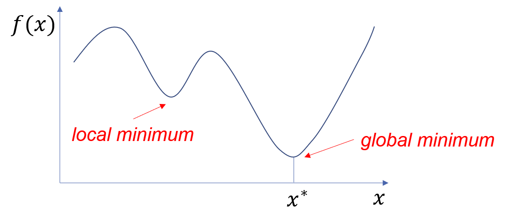
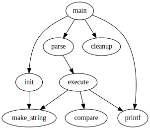
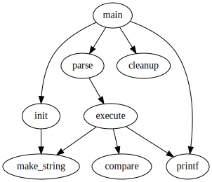

Optimisation
Optimisation
Optmisation is fundamental to machine learning. Here we look at the general problem of optimisation and later apply it to machine learning.
The problem
In its simplest form, the optimsation problem can be expressed as follows. Given some function f:\R\rightarrow\R we seek x^*, the value of x that gives the minimum output from the function:

For functions with n-dimensional input and a scalar output f:\R^n\rightarrow\R we seek \myvec{x}^*, the value of \myvec{x} that gives the minimum output from the function:
Gradient descent
Gradient descent is a general approach for finding the minimum of a function. The idea is to start with some random \myvec{x} and make repeated small step-changes to \myvec{x} in the direction of steepest descent of the output f(\myvec{x}). The following diagram illustrates this idea for n=2.
 

To do this we need to be able to work out the gradient of the surface at a given point. This amounts to seeing how the output changes with infinitesimally small changes in each of the components of \myvec{x} - the so-called gradient vector:
For example, in 2-D suppose
The gradient vector is then given by
Thus, the gradient myvector at (3,4) is \begin{bmatrix} 18 \\ 3 \end {bmatrix}. This vector is in the direction of the steepest slope and has magnitude equal to the slope. This is the direction in which we should move to get closer to the summit (maximum value). To reach the minimum we move in the opposite direction. Thus, we make a small step from \myvec{x} to a new point \myvec{x'} defined as follows:
\eta simply scales the step size and is generally a small number (e.g. \eta=0.002) Notice that the displacement is subtracted so that we move downhill.